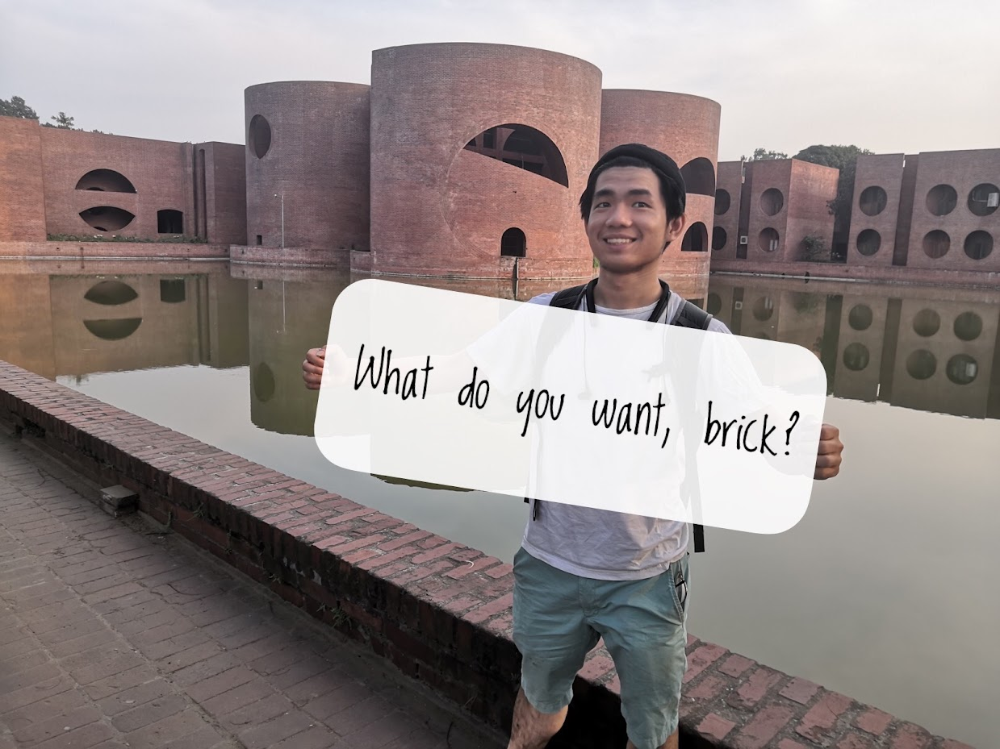

Hello, I'm Kai (Bangkai) Yu, I am currently studying web course in Coder Academy. I was an architect intern begore and I have a Bachelor degree of desgin in Architecture. After my undergraduate studies and internship, I decided to pursue a career in IT after discovering and falling in love with parametric design and coding. I have the skills of :
I am passionate about desgin, culture and technology. I am enjoyinging spending times on meditating, hiking and traveling. Feel free to reach out if you are interested in my work. Thanks!
